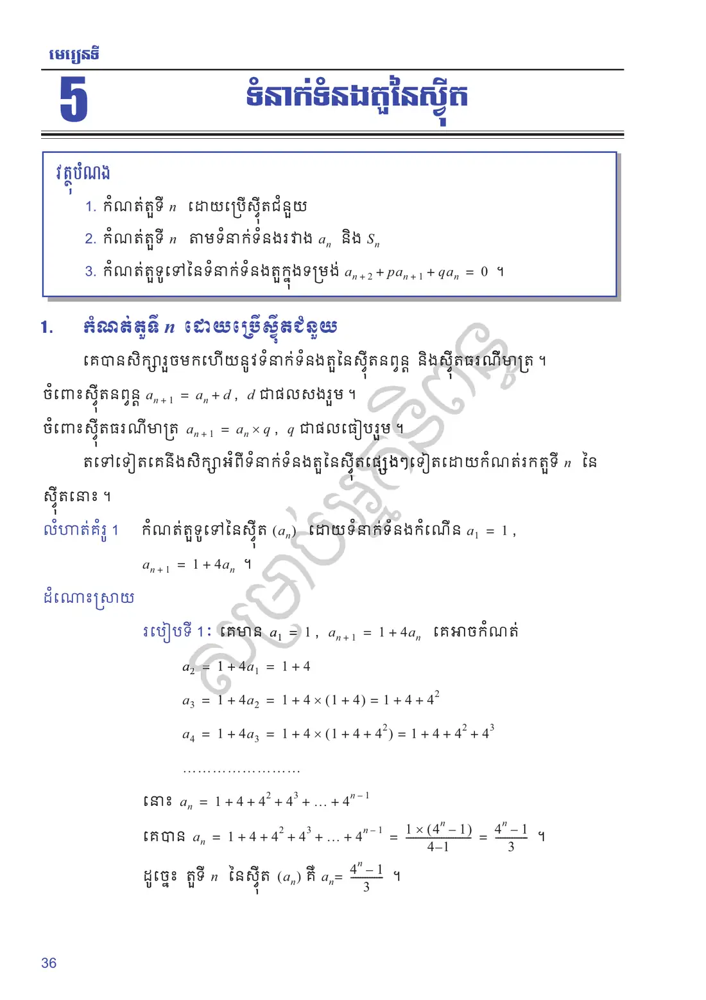
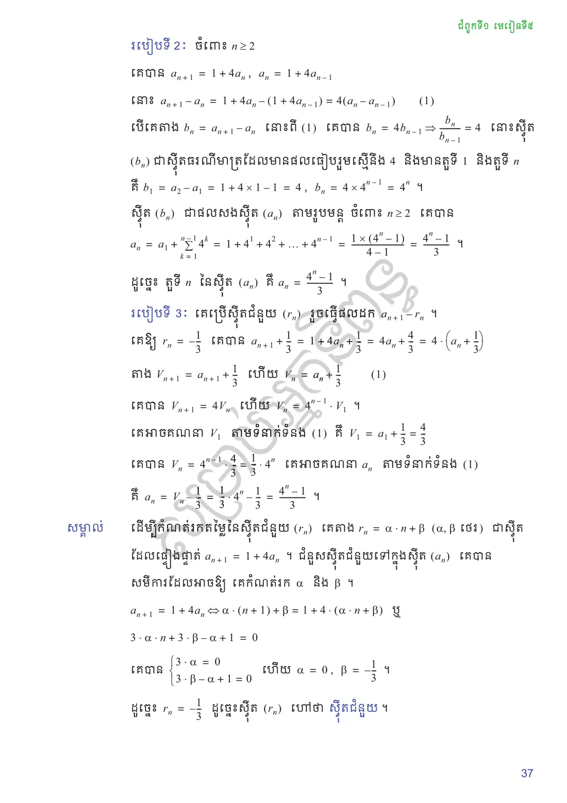
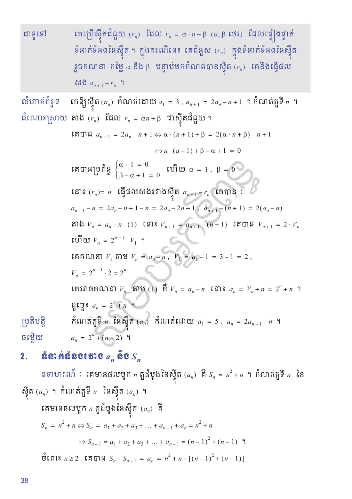
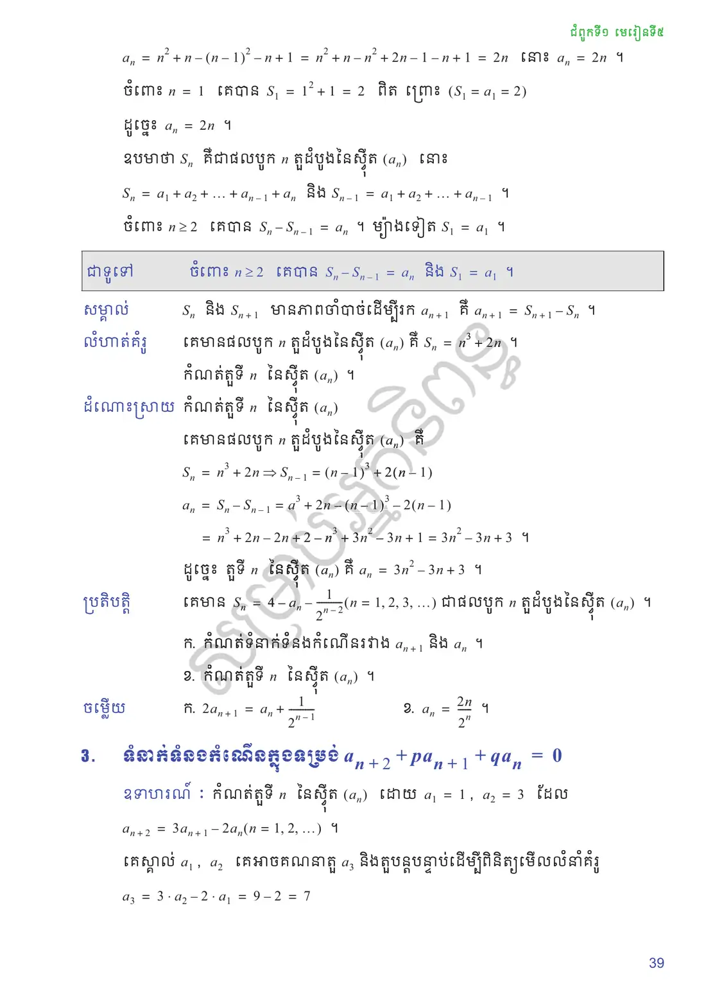
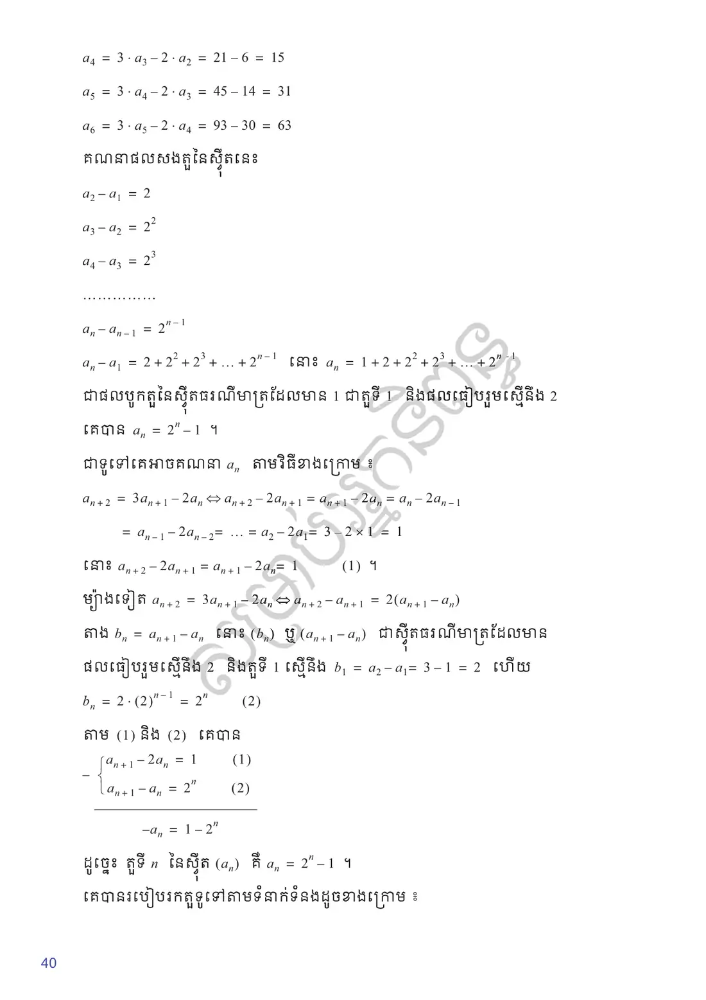
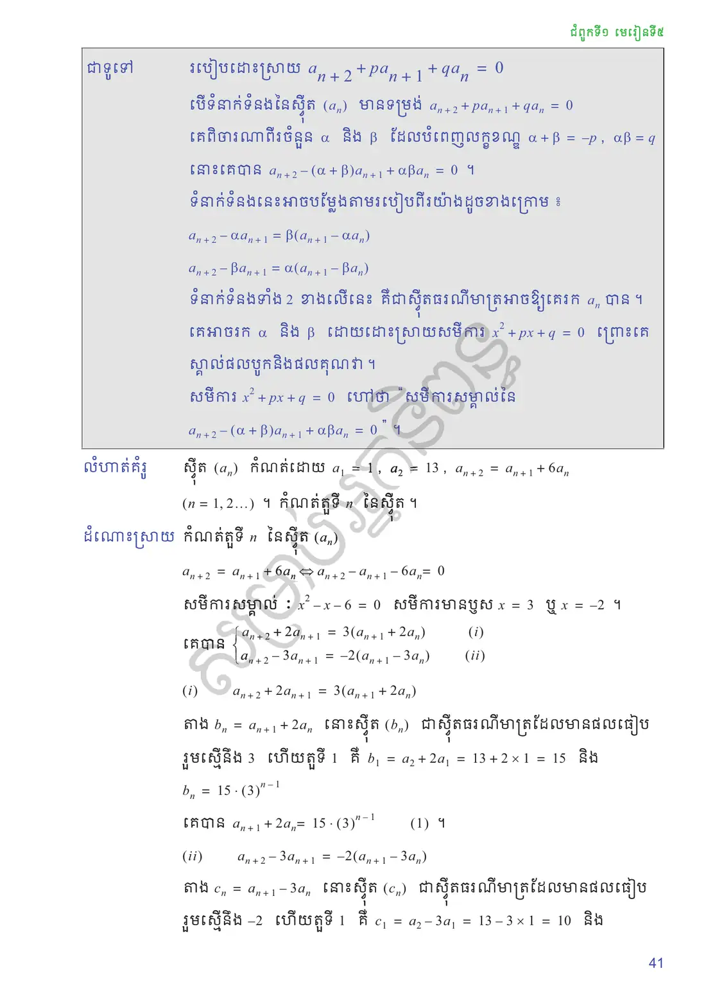
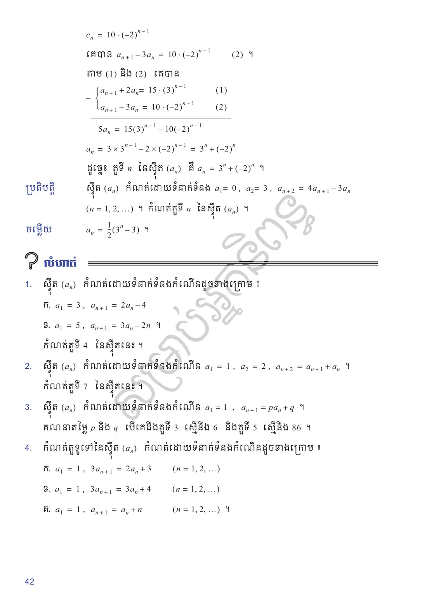
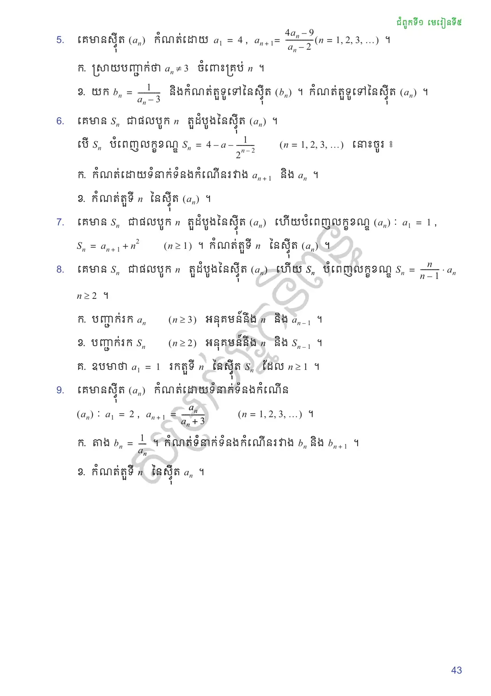

កំណត់តួទី \(n\) ដោយប្រើស៊ីតជំនួយ
កំណត់តួទី \(n\) តាមទំនាក់ទំនងរវាង \(a_n\) និង \(S_n\)
កំណត់តួទូទៅនៃទំនាក់ទំនងតួក្នុងទម្រង់ \(a_{n+2} + pa_{n+1} + qa_n = 0\) ។
កំណត់តួទី \(n\) ដោយប្រើស៊ីតជំនួយ
គេបានសិក្សារួចមកហើយនូវទំនាក់ទំនងតួនៃស៊ីតនព្វន្ត និងស៊ីតធរណីមាត្រ ។
ចំពោះស៊ីតនព្វន្ត \(a_{n+1} = a_n + d\), \(d\) ជាផលសងរួម ។
ចំពោះស៊ីតធរណីមាត្រ \(a_{n+1} = a_n \times q\), \(q\) ជាផលធៀបរួម ។
តទៅទៀតគេនឹងសិក្សាអំពីទំនាក់ទំនងតួនៃស៊ីតផ្សេងៗទៀតដោយកំណត់រកតួទី \(n\) នៃស៊ីតនោះ ។
កំណត់តួទូទៅនៃស៊ីត \((a_n)\) ដោយទំនាក់ទំនងកំណើន \(a_1 = 1\), \(a_{n+1} = 1 + 4a_n\) ។
របៀបទី ១ ៖ គេមាន \(a_1 = 1\), \(a_{n+1} = 1 + 4a_n\) គេអាចកំណត់
របៀបទី ២ ៖ ចំពោះ \(n \ge 2\) គេបាន \(a_{n+1} = 1 + 4a_n\), \(a_n = 1 + 4a_{n-1}\) នោះ
ស៊ីត \((b_n)\) ជាផលសងស៊ីត \((a_n)\) តាមរូបមន្ត ចំពោះ \(n \ge 2\) គេបាន
របៀបទី ៣ ៖ គេប្រើស៊ីតជំនួយ \((r_n)\) រួចធ្វើផលដក \(a_{n+1} - r_n\) ។
គេឱ្យ \(r_n = -\dfrac{1}{3}\) គេបាន \(a_{n+1} + \dfrac{1}{3} = 1 + 4a_n + \dfrac{1}{3} = 4a_n + \dfrac{4}{3} = 4 \cdot \left(a_n + \dfrac{1}{3}\right)\) ។
តាង \(V_{n+1} = a_{n+1} + \dfrac{1}{3}\) ហើយ \(V_n = a_n + \dfrac{1}{3}\) \((1)\)
គេបាន \(V_{n+1} = 4V_n\) ហើយ \(V_n = 4^{n-1} \cdot V_1\) ។ គេអាចគណនា \(V_1\) តាមទំនាក់ទំនង \((1)\) គឺ \(V_1 = a_1 + \dfrac{1}{3} = \dfrac{4}{3}\) ។
គេបាន \(V_n = 4^{n-1} \cdot \dfrac{4}{3} = \dfrac{1}{3} \cdot 4^n\) ។ គេអាចគណនា \(a_n\) តាមទំនាក់ទំនង \((1)\) គឺ \(a_n = V_n - \dfrac{1}{3} = \dfrac{1}{3} \cdot 4^n - \dfrac{1}{3} = \dfrac{4^n - 1}{3}\) ។
ដើម្បីកំណត់រកតម្លៃនៃស៊ីតជំនួយ \((r_n)\) គេតាង \(r_n = \alpha \cdot n + \beta\) (\(\alpha, \beta\) ថេរ) ជាស៊ីតដែលផ្ទៀងផ្ទាត់ \(a_{n+1} = 1 + 4a_n\) ។ ជំនួសស៊ីតជំនួយទៅក្នុងស៊ីត \((a_n)\) គេបានសមីការដែលអាចឱ្យ គេកំណត់រក \(\alpha\) និង \(\beta\) ។
ដូច្នេះ \(r_n = -\dfrac{1}{3}\) ដូច្នេះស៊ីត \((r_n)\) ហៅថា ស៊ីតជំនួយ ។
គេប្រើស៊ីតជំនួយ \((r_n)\) ដែល \(r_n = \alpha \cdot n + \beta\) (\(\alpha, \beta\) ថេរ) ដែលផ្ទៀងផ្ទាត់ទំនាក់ទំនងនៃស៊ីត ។ ក្នុងករណីនេះ គេជំនួស \((r_n)\) ក្នុងទំនាក់ទំនងនៃស៊ីត រួចគណនា តម្លៃ \(\alpha\) និង \(\beta\) បន្ទាប់មកកំណត់បានស៊ីត \((r_n)\) គេនឹងធ្វើផលសង \(a_{n+1} - r_n\) ។
គេឱ្យស៊ីត \((a_n)\) កំណត់ដោយ \(a_1 = 3\), \(a_{n+1} = 2a_n - n + 1\) ។ កំណត់តួទី \(n\) ។
តាង \((r_n)\) ដែល \(r_n = \alpha n + \beta\) ជាស៊ីតជំនួយ ។ គេបាន
នោះ \((r_n) = n\) ធ្វើផលសងរវាងស៊ីត \(a_{n+1} - r_n\) គេបាន ៖
គេគណនា \(V_1\) តាម \(V_n = a_n - n\), \(V_1 = a_1 - 1 = 3 - 1 = 2\), \(V_n = 2^{n-1} \cdot 2 = 2^n\) ។
គេអាចគណនា \(V_n\) តាម \((1)\) គឺ \(V_n = a_n - n\) នោះ \(a_n = V_n + n = 2^n + n\) ។
ដូច្នេះ \(a_n = 2^n + n\) ។
កំណត់តួទី \(n\) នៃស៊ីត \((a_n)\) កំណត់ដោយ \(a_1 = 5\), \(a_n = 2a_{n-1} - n\) ។
មើលចម្លើយ
\(a_n = 2^n + (n + 2)\) ។
ទំនាក់ទំនងរវាង \(a_n\) និង \(S_n\)
គេមានផលបូក \(n\) តួដំបូងនៃស៊ីត \((a_n)\) គឺ \(S_n = n^2 + n\) ។ កំណត់តួទី \(n\) នៃស៊ីត \((a_n)\) ។
គេមានផលបូក \(n\) តួដំបូងនៃស៊ីត \((a_n)\) គឺ
ដូច្នេះ \(a_n = 2n\) ។
ឧបមាថា \(S_n\) គឺជាផលបូក \(n\) តួដំបូងនៃស៊ីត \((a_n)\) នោះ \(S_n = a_1 + a_2 + \ldots + a_{n-1} + a_n\) និង \(S_{n-1} = a_1 + a_2 + \ldots + a_{n-1}\) ។
ចំពោះ \(n \ge 2\) គេបាន \(S_n - S_{n-1} = a_n\) ។ ម្យ៉ាងទៀត \(S_1 = a_1\) ។
ចំពោះ \(n \ge 2\) គេបាន \(S_n - S_{n-1} = a_n\) និង \(S_1 = a_1\) ។
\(S_n\) និង \(S_{n+1}\) មានភាពចាំបាច់ដើម្បីរក \(a_{n+1}\) គឺ \(a_{n+1} = S_{n+1} - S_n\) ។
គេមានផលបូក \(n\) តួដំបូងនៃស៊ីត \((a_n)\) គឺ \(S_n = n^3 + 2n\) ។ កំណត់តួទី \(n\) នៃស៊ីត \((a_n)\) ។
គេមានផលបូក \(n\) តួដំបូងនៃស៊ីត \((a_n)\) គឺ \(S_n = n^3 + 2n \Rightarrow S_{n-1} = (n - 1)^3 + 2(n - 1)\)
គេមាន \(S_n = 4 - a_n - \dfrac{1}{2^{n-2}}\) \((n = 1, 2, 3, \ldots)\) ជាផលបូក \(n\) តួដំបូងនៃស៊ីត \((a_n)\) ។
កំណត់ទំនាក់ទំនងកំណើនរវាង \(a_{n+1}\) និង \(a_n\) ។
កំណត់តួទី \(n\) នៃស៊ីត \((a_n)\) ។
មើលចម្លើយ
\(2a_{n+1} = a_n + \dfrac{1}{2^{n-1}}\)
\(a_n = \dfrac{2n}{2^n}\) ។
ទំនាក់ទំនងកំណើនតួក្នុងទម្រង់ \(a_{n+2} + pa_{n+1} + qa_n = 0\)
កំណត់តួទី \(n\) នៃស៊ីត \((a_n)\) ដោយ \(a_1 = 1\), \(a_2 = 3\) ដែល \(a_{n+2} = 3a_{n+1} - 2a_n\) \((n = 1, 2, \ldots)\) ។
គេស្គាល់ \(a_1\), \(a_2\) គេអាចគណនាតួ \(a_3\) និងតួបន្តបន្ទាប់ដើម្បីពិនិត្យមើលលំនាំគំរូ
ជាទូទៅគេអាចគណនា \(a_n\) តាមវិធីខាងក្រោម ៖
ម្យ៉ាងទៀត \(a_{n+2} = 3a_{n+1} - 2a_n \iff a_{n+2} - a_{n+1} = 2(a_{n+1} - a_n)\) ។
តាង \(b_n = a_{n+1} - a_n\) នោះ \((b_n)\) ឬ \((a_{n+1} - a_n)\) ជាស៊ីតធរណីមាត្រដែលមានផលធៀបរួមស្មើនឹង \(2\) និងតួទី \(1\) ស្មើនឹង \(b_1 = a_2 - a_1 = 3 - 1 = 2\) ហើយ \(b_n = 2 \cdot (2)^{n-1} = 2^n\) \((2)\)
តាម \((1)\) និង \((2)\) គេបាន
ដូច្នេះ តួទី \(n\) នៃស៊ីត \((a_n)\) គឺ \(a_n = 2^n - 1\) ។
គេបានរបៀបរកតួទូទៅតាមទំនាក់ទំនងដូចខាងក្រោម ៖
របៀបដោះស្រាយ \(a_{n+2} + pa_{n+1} + qa_n = 0\)
បើទំនាក់ទំនងនៃស៊ីត \((a_n)\) មានទម្រង់ \(a_{n+2} + pa_{n+1} + qa_n = 0\) គេពិចារណាពីរចំនួន \(\alpha\) និង \(\beta\) ដែលបំពេញលក្ខខណ្ឌ \(\alpha + \beta = -p\), \(\alpha\beta = q\) នោះគេបាន \(a_{n+2} - (\alpha + \beta)a_{n+1} + \alpha\beta a_n = 0\) ។
ទំនាក់ទំនងនេះអាចបម្លែងតាមរបៀបពីរយ៉ាងដូចខាងក្រោម ៖
គេអាចរក \(\alpha\) និង \(\beta\) ដោយដោះស្រាយសមីការ \(x^2 + px + q = 0\) ព្រោះគេស្គាល់ផលបូកនិងផលគុណវា ។
សមីការ \(x^2 + px + q = 0\) ហៅថា “សមីការសម្គាល់នៃ \(a_{n+2} - (\alpha + \beta)a_{n+1} + \alpha\beta a_n = 0\)” ។
ស៊ីត \((a_n)\) កំណត់ដោយ \(a_1 = 1\), \(a_2 = 13\), \(a_{n+2} = a_{n+1} + 6a_n\) \((n = 1, 2, \ldots)\) ។ កំណត់តួទី \(n\) នៃស៊ីត ។
កំណត់តួទី \(n\) នៃស៊ីត \((a_n)\) ៖ \(a_{n+2} = a_{n+1} + 6a_n \iff a_{n+2} - a_{n+1} - 6a_n = 0\)
សមីការសម្គាល់ ៖ \(x^2 - x - 6 = 0\) សមីការមានឫស \(x = 3\) ឬ \(x = -2\) ។ គេបាន
\((ii)\) \(a_{n+2} - 3a_{n+1} = -2(a_{n+1} - 3a_n)\) ។ តាង \(c_n = a_{n+1} - 3a_n\) នោះស៊ីត \((c_n)\) ជាស៊ីតធរណីមាត្រដែលមានផលធៀបរួមស្មើនឹង \(-2\) ហើយតួទី \(1\) គឺ \(c_1 = a_2 - 3a_1 = 13 - 3 \times 1 = 10\) និង \(c_n = 10 \cdot (-2)^{n-1}\) ។ គេបាន \(a_{n+1} - 3a_n = 10 \cdot (-2)^{n-1}\) \((2)\) ។
តាម \((1)\) និង \((2)\) គេបាន
ស៊ីត \((a_n)\) កំណត់ដោយទំនាក់ទំនង \(a_1 = 0\), \(a_2 = 3\), \(a_{n+2} = 4a_{n+1} - 3a_n\) \((n = 1, 2, \ldots)\) ។ កំណត់តួទី \(n\) នៃស៊ីត \((a_n)\) ។
មើលចម្លើយ
\(a_n = \dfrac{1}{2}(3^n - 3)\) ។
ទំព័រសៀវភៅដើម
បើកមើលទំព័រសៀវភៅពុម្ព








លំហាត់អនុវត្តន៍
ស៊ីត \((a_n)\) កំណត់ដោយទំនាក់ទំនងកំណើនដូចខាងក្រោម ៖
\(a_1 = 3\), \(a_{n+1} = 2a_n - 4\)
\(a_1 = 5\), \(a_{n+1} = 3a_n - 2n\) ។
កំណត់តួទី \(4\) នៃស៊ីតនេះ ។
ស៊ីត \((a_n)\) កំណត់ដោយទំនាក់ទំនងកំណើន \(a_1 = 1\), \(a_2 = 2\), \(a_{n+2} = a_{n+1} + a_n\) ។ កំណត់តួទី \(7\) នៃស៊ីតនេះ ។
ស៊ីត \((a_n)\) កំណត់ដោយទំនាក់ទំនងកំណើន \(a_1 = 1\), \(a_{n+1} = pa_n + q\) ។ គណនាតម្លៃ \(p\) និង \(q\) បើគេដឹងតួទី \(3\) ស្មើនឹង \(6\) និងតួទី \(5\) ស្មើនឹង \(86\) ។
កំណត់តួទូទៅនៃស៊ីត \((a_n)\) កំណត់ដោយទំនាក់ទំនងកំណើនដូចខាងក្រោម ៖
\(a_1 = 1\), \(3a_{n+1} = 2a_n + 3\) \((n = 1, 2, \ldots)\)
\(a_1 = 1\), \(3a_{n+1} = 3a_n + 4\) \((n = 1, 2, \ldots)\)
\(a_1 = 1\), \(a_{n+1} = a_n + n\) \((n = 1, 2, \ldots)\) ។
គេមានស៊ីត \((a_n)\) កំណត់ដោយ \(a_1 = 4\), \(a_{n+1} = \dfrac{4a_n - 9}{a_n - 2}\) \((n = 1, 2, 3, \ldots)\) ។
ស្រាយបញ្ជាក់ថា \(a_n \ne 3\) ចំពោះគ្រប់ \(n\) ។
យក \(b_n = \dfrac{1}{a_n - 3}\) និងកំណត់តួទូទៅនៃស៊ីត \((b_n)\) ។ កំណត់តួទូទៅនៃស៊ីត \((a_n)\) ។
គេមាន \(S_n\) ជាផលបូក \(n\) តួដំបូងនៃស៊ីត \((a_n)\) ។ បើ \(S_n\) បំពេញលក្ខខណ្ឌ \(S_n = 4 - a_n - \dfrac{1}{2^{n-2}}\) \((n = 1, 2, 3, \ldots)\) នោះចូរ ៖
កំណត់ដោយទំនាក់ទំនងកំណើនរវាង \(a_{n+1}\) និង \(a_n\) ។
កំណត់តួទី \(n\) នៃស៊ីត \((a_n)\) ។
គេមាន \(S_n\) ជាផលបូក \(n\) តួដំបូងនៃស៊ីត \((a_n)\) ហើយបំពេញលក្ខខណ្ឌ \((a_n)\) ៖ \(a_1 = 1\), \(S_n = a_{n+1} + n^2\) \((n \ge 1)\) ។ កំណត់តួទី \(n\) នៃស៊ីត \((a_n)\) ។
គេមាន \(S_n\) ជាផលបូក \(n\) តួដំបូងនៃស៊ីត \((a_n)\) ហើយ \(S_n\) បំពេញលក្ខខណ្ឌ \(S_n = \dfrac{n}{n-1} \cdot a_n\), \(n \ge 2\) ។
បញ្ជាក់រក \(a_n\) \((n \ge 3)\) អនុគមន៍នឹង \(n\) និង \(a_{n-1}\) ។
បញ្ជាក់រក \(S_n\) \((n \ge 2)\) អនុគមន៍នឹង \(n\) និង \(S_{n-1}\) ។
ឧបមាថា \(a_1 = 1\) រកតួទី \(n\) នៃស៊ីត \(S_n\) ដែល \(n \ge 1\) ។
គេមានស៊ីត \((a_n)\) កំណត់ដោយទំនាក់ទំនងកំណើន \((a_n)\) ៖ \(a_1 = 2\), \(a_{n+1} = \dfrac{a_n}{a_n + 3}\) \((n = 1, 2, 3, \ldots)\) ។
តាង \(b_n = \dfrac{1}{a_n}\) ។ កំណត់ទំនាក់ទំនងកំណើនរវាង \(b_n\) និង \(b_{n+1}\) ។
កំណត់តួទី \(n\) នៃស៊ីត \(a_n\) ។
សំណួរពហុជ្រើសរើស
ជ្រើសរើសចម្លើយត្រឹមត្រូវតែមួយ រួចចុច «ពិនិត្យ»។ ចម្លើយរបស់អ្នកត្រូវបានរក្សាទុកក្នុងកុំព្យូទ័រនេះ។
✎ សំណួរទី ១–១០
✎ សំណួរទី ១១–២០
តេស្តសមត្ថភាព ៖ មេរៀនទី ៥ ទំនាក់ទំនងតួនៃស៊ីត (វិទ្យាសាស្ត្រ) — ២០ សំណួរ · ៣៥ នាទី